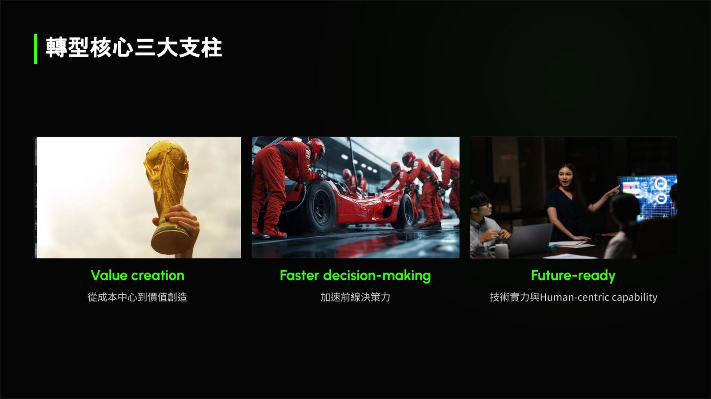
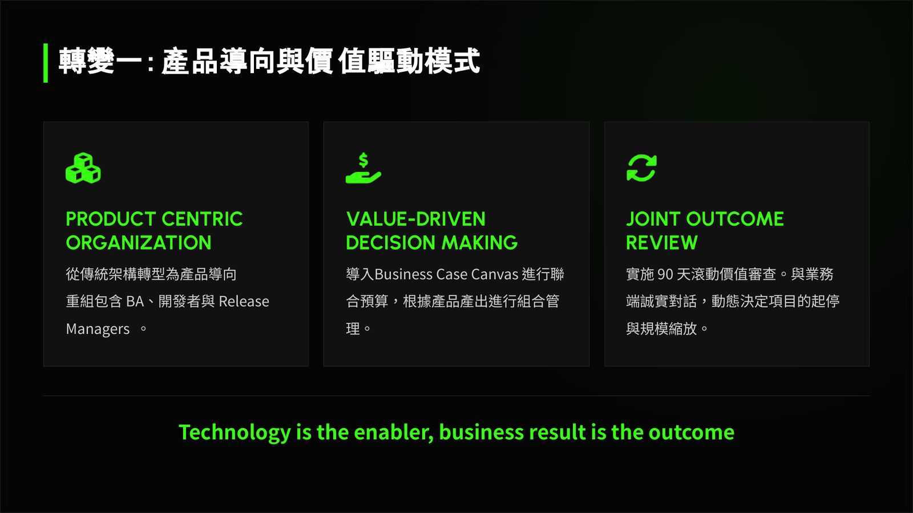
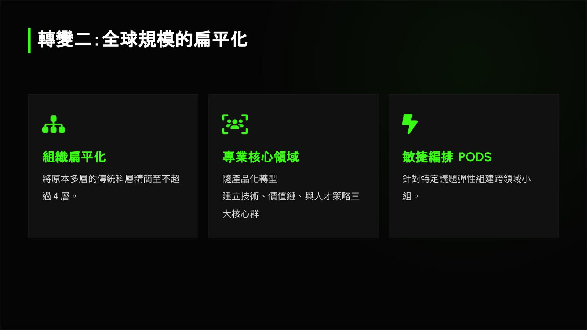
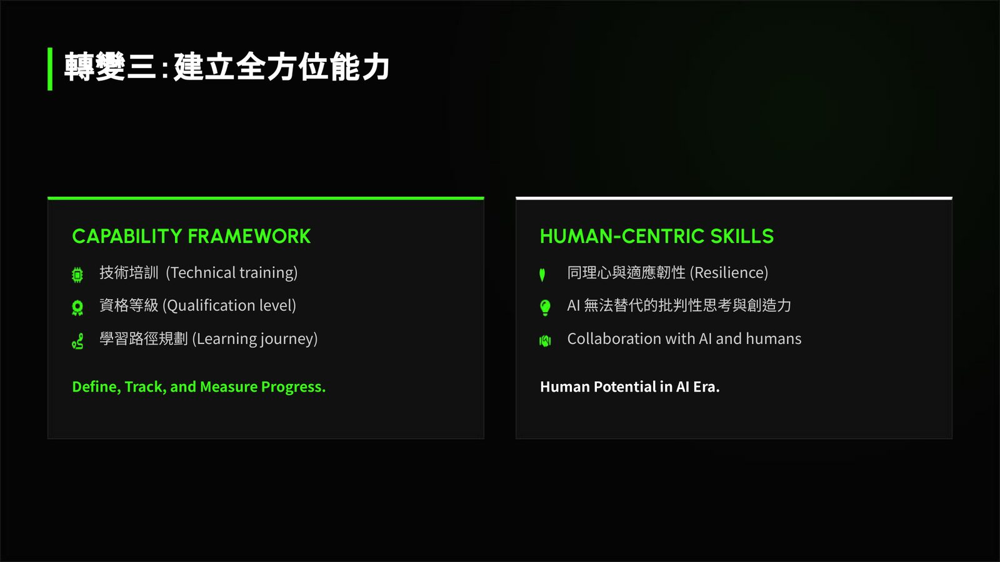

摘要
本演講分享跨國 IT 大廠組織轉型的實戰架構與藍圖。講者吳明杰（James Wu）結合其擔任亞太區數位科技主管及台灣資訊長的豐富管理經驗，直面傳統組織轉型中「理想規劃」與「執行現實」的巨大落差。為此，他提出組織變革的三大核心支柱：從成本中心轉向價值創造、加速前線決策力、以及技術實力與人本能力並重。在技術管理與組織設計層面，演講拆解了三大具體轉變：第一，轉向產品中心組織，導入 Business Case Canvas 進行聯合預算，並推行 90 天滾動式聯合成果審查；第二，進行全球規模的組織扁平化，控制管理層級在 4 層以內，並透過敏捷 PODS 組建跨領域任務小組；第三，建立 Capability Framework 全方位能力框架，培育 AI 時代下同理心、韌性與人機協作等關鍵能力，協助企業在變革中動態調配資源並創造實質商業成果。
重點整理
- 轉型核心三大支柱：從成本中心到價值創造、加速前線決策力、技術實力與人本能力並重
- 轉變一：從傳統架構轉型為產品導向組織，導入 Business Case Canvas 進行聯合預算與 90 天滾動價值審查
- 轉變二：組織扁平化，將多層科層精簡至不超過 4 層，並以敏捷編排 PODS 彈性組建跨領域小組
- 轉變三：建立涵蓋技術培訓、資格等級與同理心／韌性等人本技能的全方位能力框架
- 演講最後以「然而，現實是……」與「成功長什麼樣子？」反思轉型過程中理想與現實的落差
重點圖片／架構圖




轉型核心三大支柱
講者開宗明義提出組織轉型的三大核心支柱：第一是從成本中心轉變為價值創造（Value creation）；第二是加速前線決策力（Faster decision-making）；第三則是兼顧技術實力與人本能力（Future-ready, Technology 與 Human-centric capability）。這三者構成後續三項具體轉變的策略基礎，並強調「技術是促成者，商業成果才是最終目的」。
轉變一：產品導向與價值驅動模式
第一項轉變是從傳統架構轉型為產品中心組織（Product Centric Organization），重組包含 BA、開發者與 Release Manager 的團隊結構。同時導入以價值為驅動的決策模式（Value-Driven Decision Making），透過 Business Case Canvas 進行聯合預算編列，並根據產品產出進行組合管理。此外也實施「聯合成果審查（Joint Outcome Review）」，以 90 天滾動式價值審查與業務端誠實對話，動態決定專案的起停與規模縮放。
轉變二：全球規模的扁平化
第二項轉變聚焦組織結構的扁平化，將原本多層的傳統科層精簡至不超過 4 層。同時隨著產品化轉型，建立技術、價值鏈與人才策略三大核心領域，並透過敏捷編排 PODS，針對特定議題彈性組建跨領域小組，以提升組織應變與協作效率。
轉變三：建立全方位能力框架
第三項轉變著重於定義、追蹤與衡量進步的能力框架（Capability Framework），涵蓋人本技能（Human-Centric Skills），包括技術培訓、資格等級認定、學習路徑規劃，以及同理心與適應韌性等 AI 無法取代的批判性思考與創造力，強調人類與 AI 協作（Collaboration with AI and humans）將是未來人才發展的關鍵。
理想與現實的落差反思
演講尾聲，講者以「然而，現實是……」點出轉型過程中實際執行時遭遇的挑戰與落差，並提出「成功長什麼樣子？（What does success look like?）」的提問，引導聽眾反思組織轉型的最終樣貌與衡量標準，最後以「Growing Leaders. Building Organizations. Creating Value.」作結。